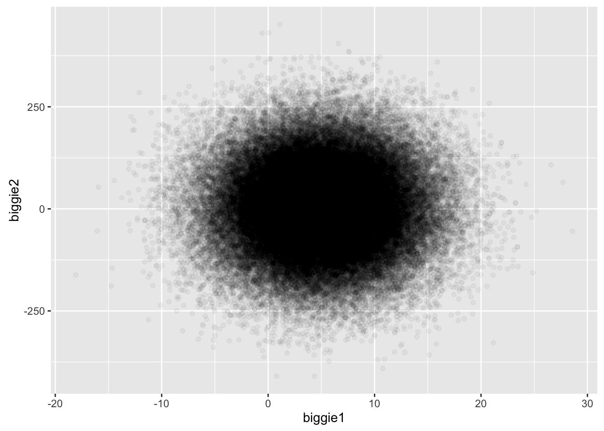
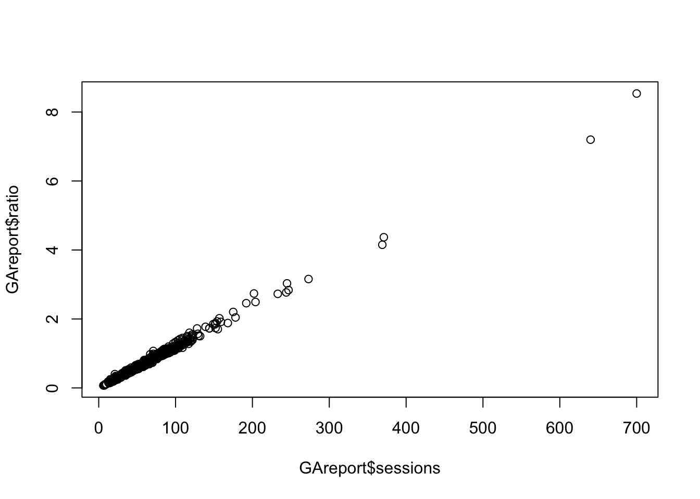
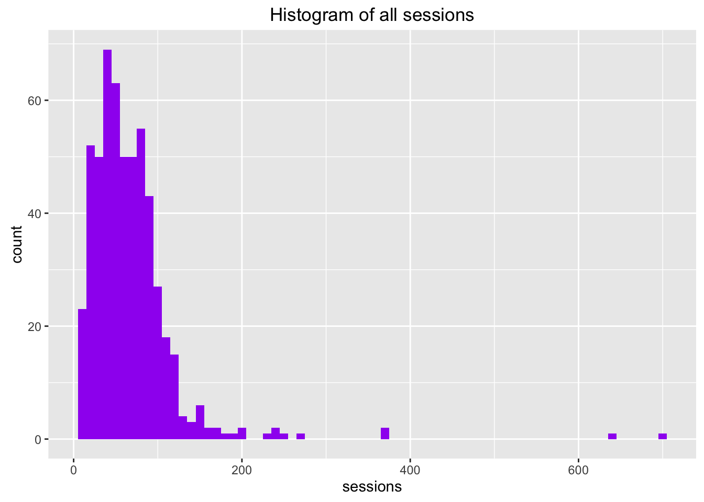
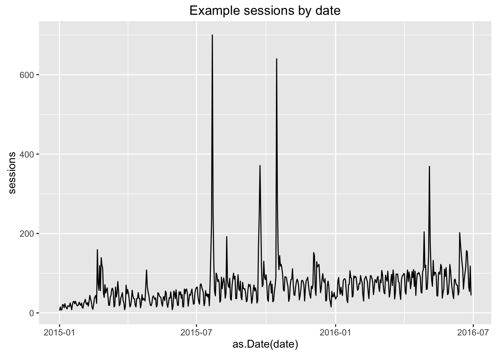

Intro to R
DonalPhilpps
28 June 2016
Basics
Creating variables
x<-"hello, world!"
x## [1] "hello, world!"print(x)## [1] "hello, world!"Working directory
Dangers of setting setwd() in scripts on interportability, perhaps explanation on using RStudio projects
getwd()## [1] "/Users/IIH-Nordic/dev/RWorkshop"# setwd()
list.files()## [1] "_site.yml"
## [2] "accessing.html"
## [3] "accessing.Rmd"
## [4] "analytics-apis.html"
## [5] "analytics-apis.Rmd"
## [6] "base-plots_files"
## [7] "base-plots.html"
## [8] "base-plots.Rmd"
## [9] "basicGAQuery.R"
## [10] "basics-base_r.html"
## [11] "basics-base_r.Rmd"
## [12] "best-practice.html"
## [13] "best-practice.Rmd"
## [14] "categorisation_files"
## [15] "categorisation.html"
## [16] "categorisation.Rmd"
## [17] "classes.html"
## [18] "classes.Rmd"
## [19] "correlation_files"
## [20] "correlation.html"
## [21] "correlation.Rmd"
## [22] "data"
## [23] "dplyr.html"
## [24] "dplyr.Rmd"
## [25] "example1_files"
## [26] "example1.html"
## [27] "example1.Rmd"
## [28] "example2.html"
## [29] "example2.Rmd"
## [30] "example3.html"
## [31] "example3.Rmd"
## [32] "example4.html"
## [33] "example4.Rmd"
## [34] "excel.html"
## [35] "excel.Rmd"
## [36] "exercise1-thebasics_files"
## [37] "exercise1-thebasics.html"
## [38] "exercise1-thebasics.Rmd"
## [39] "exercise2-io.html"
## [40] "exercise2-io.Rmd"
## [41] "exercise3-accessing-data.html"
## [42] "exercise3-accessing-data.Rmd"
## [43] "exercise4-tidy-dplyr.html"
## [44] "exercise4-tidy-dplyr.Rmd"
## [45] "exercise5-correlation_files"
## [46] "exercise5-correlation.html"
## [47] "exercise5-correlation.Rmd"
## [48] "exercise6-anomaly-detection_files"
## [49] "exercise6-anomaly-detection.html"
## [50] "exercise6-anomaly-detection.Rmd"
## [51] "exercise6-regression.html"
## [52] "exercise6-regression.Rmd"
## [53] "exercise7-visualisation.html"
## [54] "exercise7-visualisation.Rmd"
## [55] "exercise8-rmarkdown.html"
## [56] "exercise8-rmarkdown.Rmd"
## [57] "ggplot2_files"
## [58] "ggplot2.html"
## [59] "ggplot2.Rmd"
## [60] "github.html"
## [61] "github.Rmd"
## [62] "going-further.html"
## [63] "going-further.Rmd"
## [64] "habits.html"
## [65] "habits.Rmd"
## [66] "htmlwidgets.html"
## [67] "htmlwidgets.Rmd"
## [68] "images"
## [69] "import-csv-excel.html"
## [70] "import-csv-excel.Rmd"
## [71] "index.html"
## [72] "index.knit.html"
## [73] "index.Rmd"
## [74] "intros_twitter_wordcloud_usernames.csv"
## [75] "intros_twitter_wordcloud.R"
## [76] "intros-wordcloud"
## [77] "intros.html"
## [78] "intros.Rmd"
## [79] "introToR_donalPhipps_files"
## [80] "introToR_donalPhipps.html"
## [81] "introToR_donalPhipps.R"
## [82] "introToR_donalPhipps.Rmd"
## [83] "key-topics.html"
## [84] "key-topics.Rmd"
## [85] "modelling-intro_files"
## [86] "modelling-intro.html"
## [87] "modelling-intro.Rmd"
## [88] "packages.html"
## [89] "packages.Rmd"
## [90] "pullGAData.R"
## [91] "README.html"
## [92] "README.md"
## [93] "regression_files"
## [94] "regression.html"
## [95] "regression.Rmd"
## [96] "resources.html"
## [97] "resources.Rmd"
## [98] "rmarkdown_files"
## [99] "rmarkdown-shiny.html"
## [100] "rmarkdown-shiny.Rmd"
## [101] "rmarkdown.html"
## [102] "rmarkdown.Rmd"
## [103] "rstudio.html"
## [104] "rstudio.Rmd"
## [105] "RWorkshopCopenhagen.Rproj"
## [106] "shiny.html"
## [107] "shiny.Rmd"
## [108] "site_libs"
## [109] "td.csv"
## [110] "tidyverse.html"
## [111] "tidyverse.Rmd"
## [112] "timeseries_files"
## [113] "timeseries.html"
## [114] "timeseries.Rmd"
## [115] "viz-options.html"
## [116] "viz-options.Rmd"
## [117] "whatisr.html"
## [118] "whatisr.Rmd"Data types
Numeric data types
test<-1
test2<-c(1,2,3,4,5,6,7)
mean(test2)## [1] 4median(test2)## [1] 4test3<-c(1:7)
test2==test3## [1] TRUE TRUE TRUE TRUE TRUE TRUE TRUEtest2*test3## [1] 1 4 9 16 25 36 49Character class
x<-c("hello","world")
class(x)## [1] "character"x[1]## [1] "hello"paste(x[1], x[2], "from London.")## [1] "hello world from London."Booleans / logicals
bool<-c(TRUE,FALSE,FALSE,TRUE,FALSE,FALSE,TRUE)
bool## [1] TRUE FALSE FALSE TRUE FALSE FALSE TRUEMatrix
mat<-matrix(1:100, ncol=10, nrow=10)
mat## [,1] [,2] [,3] [,4] [,5] [,6] [,7] [,8] [,9] [,10]
## [1,] 1 11 21 31 41 51 61 71 81 91
## [2,] 2 12 22 32 42 52 62 72 82 92
## [3,] 3 13 23 33 43 53 63 73 83 93
## [4,] 4 14 24 34 44 54 64 74 84 94
## [5,] 5 15 25 35 45 55 65 75 85 95
## [6,] 6 16 26 36 46 56 66 76 86 96
## [7,] 7 17 27 37 47 57 67 77 87 97
## [8,] 8 18 28 38 48 58 68 78 88 98
## [9,] 9 19 29 39 49 59 69 79 89 99
## [10,] 10 20 30 40 50 60 70 80 90 100mat[ 1, ]## [1] 1 11 21 31 41 51 61 71 81 91mat[ , 1 ]## [1] 1 2 3 4 5 6 7 8 9 10Data frames
One of the most important R objects, this standardises data for use in packages
# Recall our test2 vector of numbers, and our bool vector of Booleans
test2## [1] 1 2 3 4 5 6 7bool## [1] TRUE FALSE FALSE TRUE FALSE FALSE TRUEtest2[bool]## [1] 1 4 7comb<-data.frame(test2,bool)
mat.frame<-data.frame(mat)
mat.frame$X1## [1] 1 2 3 4 5 6 7 8 9 10mat.frame$X4## [1] 31 32 33 34 35 36 37 38 39 40combining data types, not possible in matrices
mat.frame<-cbind(mat.frame,c("one","two","three","four","five","six","seven","eight","nine","ten"))
names(mat.frame)<-c("ones","tens","twenties","thirties","fourties","fifties","sixties","seventies","eighties","nineties", "words")
#accessing dataframe columns by colnames
mat.frame$twenties## [1] 21 22 23 24 25 26 27 28 29 30mat.frame[1:3,"thirties"]## [1] 31 32 33# simple arithmetic
mat.frame$tens * mat.frame$twenties## [1] 231 264 299 336 375 416 459 504 551 600Lots of data
biggie1<-rnorm(100000, 5, 5)
biggie2<-rnorm(100000, 5, 100)
mean(biggie1)## [1] 4.998128big.frame<-data.frame(cbind(biggie1,biggie2))
ggplot(big.frame,aes(x=biggie1,y=biggie2)) + geom_point(alpha=0.04)
Reading data
# reads in some example data from the GA API
GAreport<-read.csv("data/gadata_example.csv", stringsAsFactors=FALSE)
head(GAreport)## date sessions bounceRate ratio
## 1 2015-01-01 6 83.33333 0.0720000
## 2 2015-01-02 15 93.33333 0.1607143
## 3 2015-01-03 7 100.00000 0.0700000
## 4 2015-01-04 8 75.00000 0.1066667
## 5 2015-01-05 21 76.19048 0.2756250
## 6 2015-01-06 20 95.00000 0.2105263# Removing unwanted columns
GAreport2 <- GAreport[, -(1:2)]
# Simple data examinations made easy
summary(GAreport)## date sessions bounceRate ratio
## Length:545 Min. : 6.0 Min. : 52.38 Min. :0.0700
## Class :character 1st Qu.: 36.0 1st Qu.: 80.95 1st Qu.:0.4375
## Mode :character Median : 59.0 Median : 84.31 Median :0.7008
## Mean : 67.5 Mean : 84.20 Mean :0.8077
## 3rd Qu.: 85.0 3rd Qu.: 87.96 3rd Qu.:1.0226
## Max. :700.0 Max. :100.00 Max. :8.5366quantile(GAreport$sessions)## 0% 25% 50% 75% 100%
## 6 36 59 85 700str(GAreport)## 'data.frame': 545 obs. of 4 variables:
## $ date : chr "2015-01-01" "2015-01-02" "2015-01-03" "2015-01-04" ...
## $ sessions : int 6 15 7 8 21 20 13 23 16 13 ...
## $ bounceRate: num 83.3 93.3 100 75 76.2 ...
## $ ratio : num 0.072 0.161 0.07 0.107 0.276 ...Quick exploratory plots
plot(GAreport$sessions, GAreport$ratio)
hist(GAreport$sessions, main="Histogram of all sessions", xlab="Sessions")
abline(v=mean(GAreport$sessions), col="blue")
abline(v=median(GAreport$sessions),col="red")
More professional plots
# nicer reports
library(ggplot2)
## I don't like using qplot as its a bit of crutch when you need to customise later
# qplot(GAreport$sessions, main="Histogram of all sessions", xlab="Sessions")
ggplot(GAreport, aes(x=sessions)) + geom_histogram(binwidth = 10, fill = "purple") + ggtitle("Histogram of all sessions")
Glimpse at improved statistical power
first - refresher on data types (exaplained verbally) We need x axis to be a date and not a category
## date is currently a character as imported from a csv
str(GAreport)## 'data.frame': 545 obs. of 4 variables:
## $ date : chr "2015-01-01" "2015-01-02" "2015-01-03" "2015-01-04" ...
## $ sessions : int 6 15 7 8 21 20 13 23 16 13 ...
## $ bounceRate: num 83.3 93.3 100 75 76.2 ...
## $ ratio : num 0.072 0.161 0.07 0.107 0.276 ...g<-ggplot(GAreport, aes(x=as.Date(date), y=sessions)) + geom_line() + ggtitle("Example sessions by date")
g
g + geom_smooth()
# Super-simple regression model - do sessions increase over time?
quickModel<-lm(sessions ~ as.Date(date), GAreport)
summary(quickModel)##
## Call:
## lm(formula = sessions ~ as.Date(date), data = GAreport)
##
## Residuals:
## Min 1Q Median 3Q Max
## -63.06 -24.18 -7.05 8.49 641.00
##
## Coefficients:
## Estimate Std. Error t value Pr(>|t|)
## (Intercept) -1.961e+03 2.405e+02 -8.155 2.43e-15 ***
## as.Date(date) 1.214e-01 1.439e-02 8.436 2.98e-16 ***
## ---
## Signif. codes: 0 '***' 0.001 '**' 0.01 '*' 0.05 '.' 0.1 ' ' 1
##
## Residual standard error: 52.87 on 543 degrees of freedom
## Multiple R-squared: 0.1159, Adjusted R-squared: 0.1142
## F-statistic: 71.17 on 1 and 543 DF, p-value: 2.984e-16# Plotting a linear model
g + geom_smooth(method = "lm", se = FALSE)